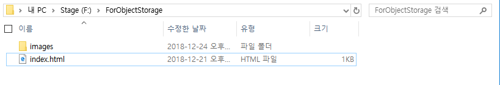
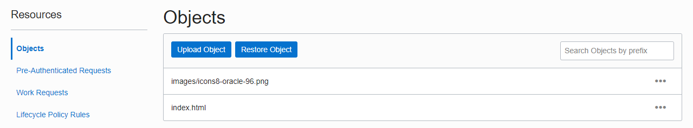
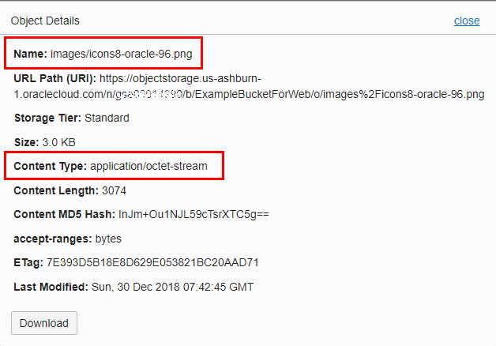

14.1.2.2 CLI를 통한 파일 업로드
Object 관리 참고 페이지
아래 페이지의 일부를 정리한 내용입니다. 전체 내용은 다음 링크를 참고하세요.
https://docs.cloud.oracle.com/iaas/Content/Object/Tasks/managingobjects.htm
Bucket상의 Object 목록 조회
oci os object list -ns <object_storage_namespace> -bn <bucket_name>Windows 실행예시
PS F:\ForObjectStorage> oci os object list -ns gse000XXXXX -bn ExampleBucket
{
"data": [
{
"md5": "InJm+Ou1NJL59cTsrXTC5g==",
"name": "icons8-oracle-96.png",
"size": 3074,
"time-created": "2018-12-26T07:50:06.732000+00:00"
}
],
"prefixes": []
}
PS F:\ForObjectStorage>필요한 IAM Policy
CLI로 Bucket에 업로드 하기 위해서는 관련 권한이 필요합니다. IAM Policy를 통해 사용자가 속한 그룹에 권한을 부여합니다.
Allow group <group_name> to manage objects in compartment <compartment_name>
Bucket에 Object 업로드
oci os object put -ns <object_storage_namespace> -bn <bucket_name> --file <file_location> --name <object_name> --no-multipartWindows 실행예시
PS F:\ForObjectStorage> oci os object put -ns gse000XXXXX -bn ExampleBucket --file index.html --no-multipart
Uploading object [####################################] 100%
{
"etag": "7DE87169BA46EA3DE053C224C00AF439",
"last-modified": "Wed, 26 Dec 2018 07:56:25 GMT",
"opc-content-md5": "MSXj81EkEsipQyJf68d3EA=="
}
PS F:\ForObjectStorage>Bucket에 Object들 벌크 업로드
oci os object bulk-upload -ns <object_storage_namespace> -bn <bucket_name> --src-dir <source_directory_location> --no-multipartWindows 실행예시
PS F:\ForObjectStorage> oci os object bulk-upload -ns gse000XXXXX -bn ExampleBucketForWeb --src-dir . --no-multipart
Uploaded index.html [####################################] 100%
{
"skipped-objects": [],
"upload-failures": {},
"uploaded-objects": {
"images/icons8-oracle-96.png": {
"etag": "7DE922A33BB8E048E053821BC20A4302",
"last-modified": "Wed, 26 Dec 2018 08:42:28 GMT",
"opc-content-md5": "InJm+Ou1NJL59cTsrXTC5g=="
},
"index.html": {
"etag": "7DE9BD0FBF4D70C8E053821BC20ADC40",
"last-modified": "Wed, 26 Dec 2018 08:42:28 GMT",
"opc-content-md5": "MSXj81EkEsipQyJf68d3EA=="
}
}
}
PS F:\ForObjectStorage>업로드 소스 폴더

업로드 된 Objects
그림과 같이 하위 폴더에 있는 파일들은 Object 이름이 소스 폴더기준의 경로임을 확인할 수 있습니다.

폴더안의 파일은 그림처럼 Object Name에 경로를 포함하는 형태로 자동으로 업로드 되었습니다.
다만 cli로 업로드 된 파일은 application/octet-stream 타입임을 알 수 있습니다.

Multipart 업로드
큰 사이즈의 파일, 예를 들어 Custom Image 파일을 업로드할 때 업로드 시간이 많이 걸리게 됩니다. 이런경우 단일 파일을 여러 파일로 나누어 병렬로 업로드 하면 더 빠르게 업로드 할 수 있습니다. 또한 전송시 네트워크 에러 발생시 에러난 파트별도 재시도를 하여 보다 안정적으로 큰 파일을 업로드 할 수 있습니다.
oci os object put -ns <object_storage_namespace> -bn <bucket_name> --file <file_location> --name <object_name> --part-size <upload_part_size_in_MB> --parallel-upload-count <maximum_number_parallel_uploads>Windows 실행예시
100 MB 파일을 10 MB 단위로 나누어서 동시 5개로 업로드하는 예시
PS F:\ForObjectStorage> oci os object put -ns gse000XXXXX -bn ExampleBucket --file BigFile_100.zip --part-size 10 --parallel-upload-count 5
Upload ID: 5cc21475-c946-61fb-6061-73a8d5be1451
Split file into 10 parts for upload.
Uploading object [####################################] 100%
{
"etag": "7DFC142F4465DE46E053C224C00A0F2C",
"last-modified": "Thu, 27 Dec 2018 07:01:27 GMT",
"opc-multipart-md5": "NfwM4rkuqXc+6sK76HLLMw==-10"
}
PS F:\ForObjectStorage>일반 업로드, Multipart 업로드 비교
클라이언트와 서버간 네트워크 상황에 따라 결과는 달라질 수 있습니다. 단순 참고용 결과입니다.
| 업로드 방식 | 파일 크기 | Part Size | Parallel Upload Count | 걸린시간 |
|---|---|---|---|---|
| 일반 업로드 | 100 MB | - | - | 31초 |
| Multipart 업로드 | 100 MB | 10 MB | 1 | 33초 |
| Multipart 업로드 | 100 MB | 10 MB | 2 | 21초 |
| Multipart 업로드 | 100 MB | 10 MB | 3 | 15초 |
| Multipart 업로드 | 100 MB | 10 MB | 4 | 14초 |
| Multipart 업로드 | 100 MB | 10 MB | 5 | 13초 |
| Multipart 업로드 | 100 MB | 20 MB | 1 | 33초 |
| Multipart 업로드 | 100 MB | 20 MB | 2 | 20초 |
| Multipart 업로드 | 100 MB | 20 MB | 3 | 15초 |
| Multipart 업로드 | 100 MB | 20 MB | 4 | 16초 |
| Multipart 업로드 | 100 MB | 20 MB | 5 | 13초 |
** 이 글은 개인으로서, 개인의 시간을 할애하여 작성된 글입니다. 글의 내용에 오류가 있을 수 있으며, 글 속의 의견은 개인적인 의견입니다. **